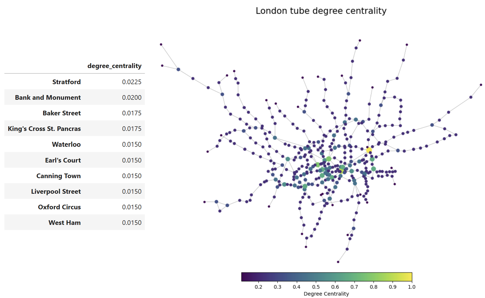
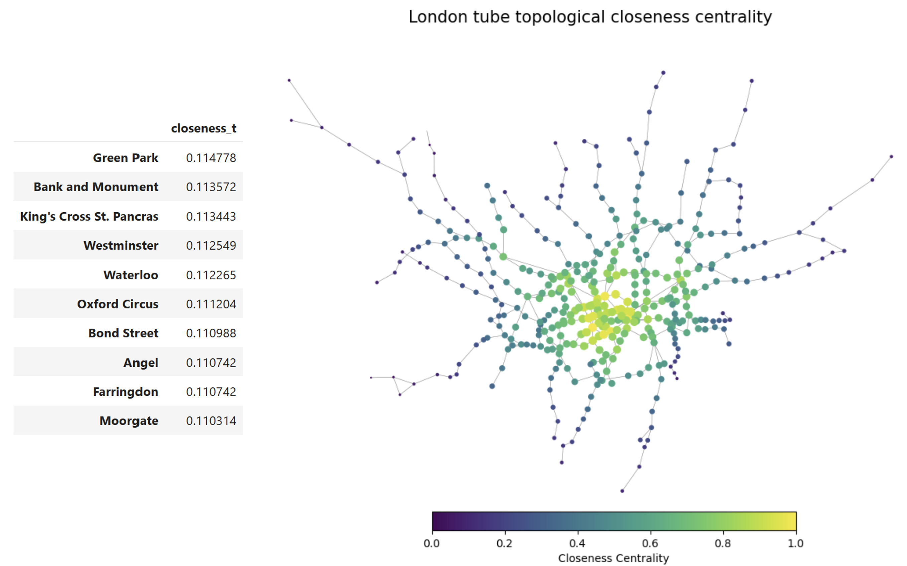
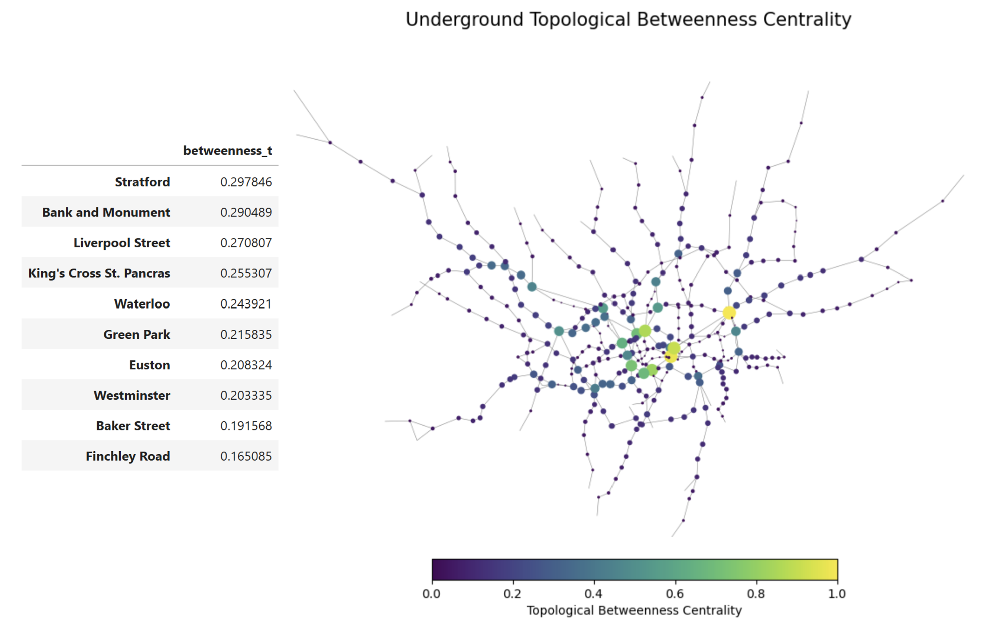
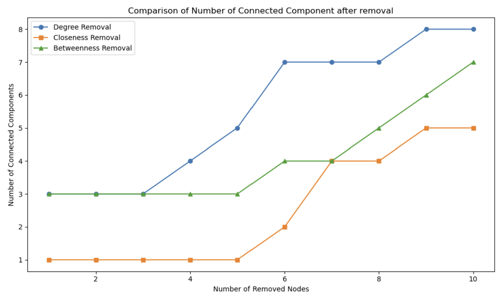
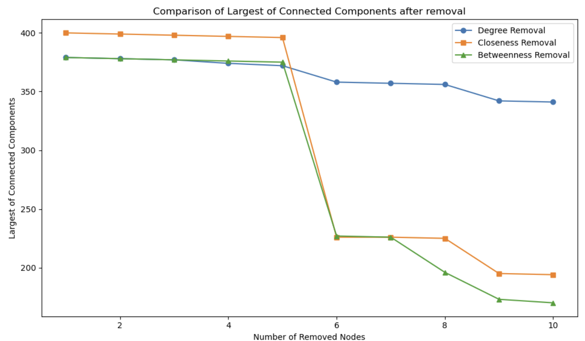
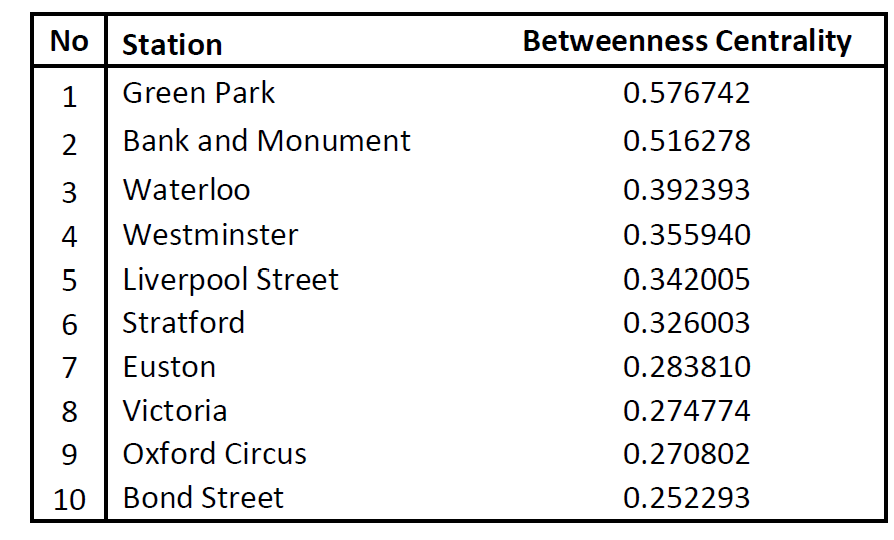
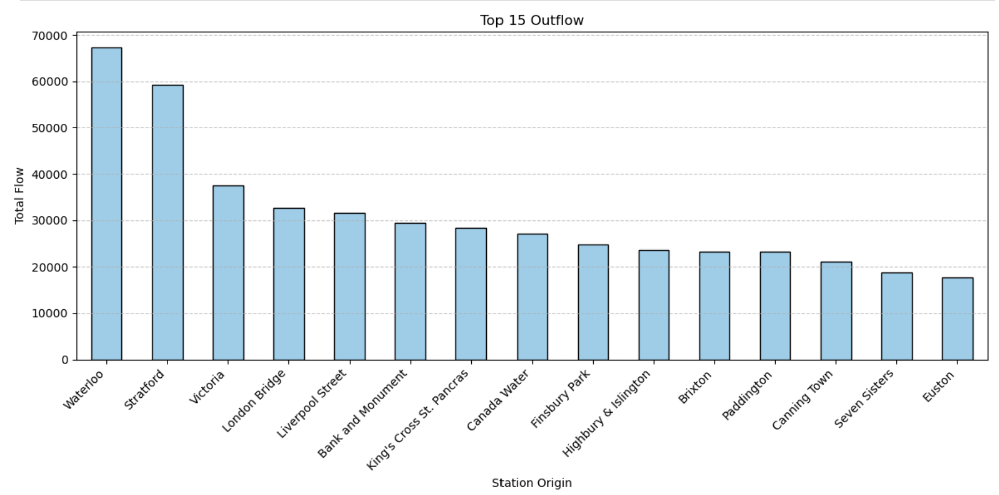
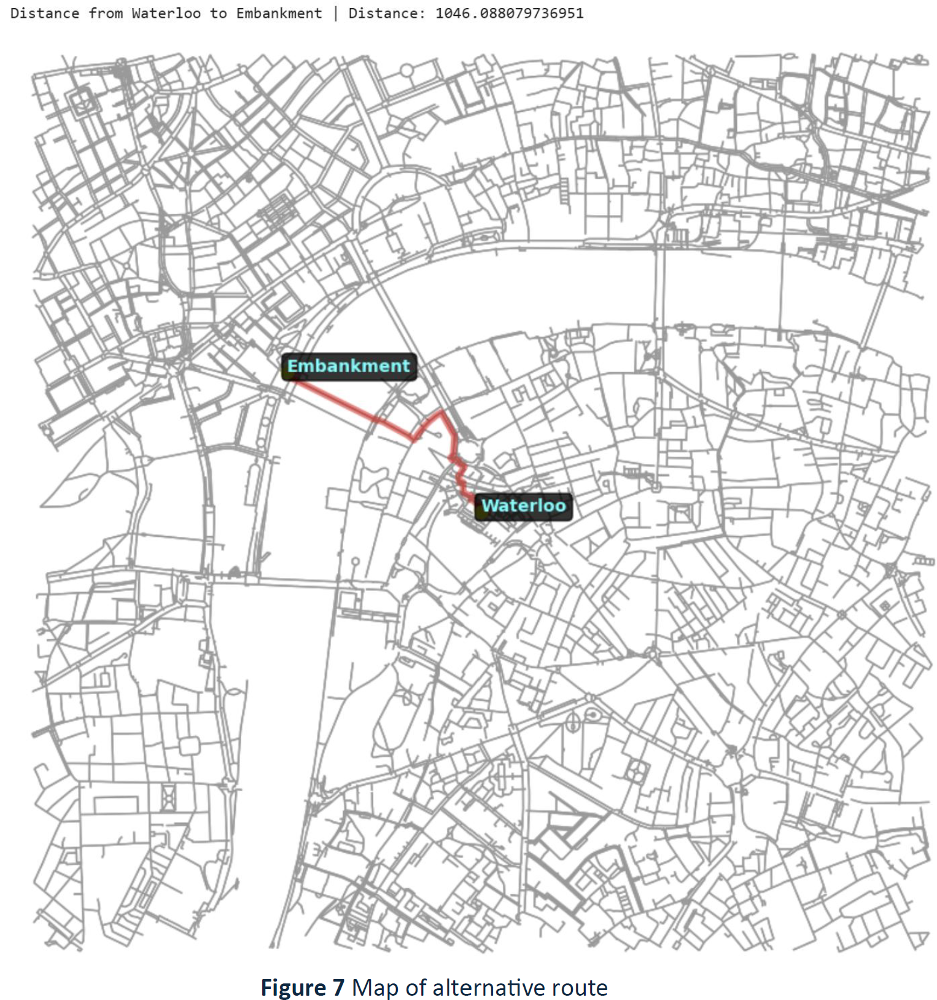

Investigating London’s Underground Resilience (AM Peak Hour 07.00-10.00)
This study aims to investigate the resilience of London’s underground system both as an infrastructural network and as a functional mode of transportation using a simplified network. It examines critical stations using various centrality measures, disruption scenarios, and their impact on passengers.
1) Which station is the most important?
Well, there are several importance measure can be used here.. To identify important stations based on how many connections a station has we use degree centrality. Turns out Stratford has the most connections ! Well, UCL East is well located then :)
To identify the importance of stations by considering its average distance to all other stations, we use closeness centrality. The distance assumed in this study is based on hops between stations (not physical distance), as passengers usually perceive ‘farness’ by the number of stations passed, which is generally more convenient than changing platforms for shorter physical distances (Göransson and Andersson, 2023).

Green Park, Bank and Museum, and King’s Cross St. Pancras are the top 3 crucial stations based on closeness centrality, indicating that they are best facilitating efficient movement across network.
Meanwhile, to identify the importance of node by counting how frequently it lies on the shortest paths between other stations we use betweenness centrality.

2) Which station if being disrupted could impact the network’s cohesion?
The scenario is conducted by sequentially remove the highest centrality, then recalculate its value and remove the highest again until 10 nodes are removed. In scenario where such happened consecutively in the highest betweenness and degree centrality station, the underground network will become easily fragmented. This indicates that station with high degree and betweenness centrality is important for network cohesion. Additionally, as it is easily disconnecting network into 3 at the earliest removal time, it suggests that it immediately impacts many passengers both arriving at or departing from the disrupted station in 3 different location.

On the other hand, the most damaging removal occurs with 10 constant removal to nodes with high betweenness centrality, as evidenced by a sharp decline in the largest connected component (LCC = 170) compared to degree and closeness centrality, with LCC 341 and 194 respectively (Figure 5). This suggests that nodes with the highest betweenness centrality are vital for maintaining global connectivity, as their disruption prevents all stations from being reachable from one another.

So far, we only calculated the network importance without considering the passenger flow. In reality, the importance of London’s underground also related to how many people come in and out from and to a station. When flows are considered, degree and closeness centrality remains unchanged as it measures node proximity, unaffected by flow quantity.
Top 10 flow weighted closeness centrality

With flow data, Green Park and Bank & Monument emerge as the most critical stations. Green Park is a key interchange for the Jubilee, Piccadilly, and Victoria lines, and provides access to Heathrow Airport. Its central role makes it prone to overcrowding, as seen on its struggle during the Queen’s Funeral in 2022 (Elvery, 2022).
3) When flow considered, which station is being impacted the most by the closure scenario? and how many people are affected?

The largest flows are found at journey from Waterloo Station to Bank & Monument. If Waterloo station is closed, 67.372 people who use Waterloo as the origin to reach Bank & Monument will be directly affected. Potentially there will be 1.475.019 people have to change their route as they planned to terminate at Waterloo.
4) Let’s say, Waterloo station is closed which nearest station people should go to?
If access to Bank & Monument from Waterloo station is unavailable, Embankment station serves as an alternative to go to Bank & Monument directly with assumption passengers continue their journey with tube. The journey takes approximately 15 minutes, assuming a UK walking speed of 1.2 seconds per meter (Asher et al., 2012), with route as follows:

Remark : The analysis is carried out using NetworkX library in python environment. The GitHub repository is available upon requested (or I will update the script here later), feel free to email me !
References :
Asher, L. et al. (2012) ‘Most older pedestrians are unable to cross the road in time: a cross-sectional study’, Age and Ageing, 41(5), pp. 690–694. doi: 10.1093/ageing/afs076.